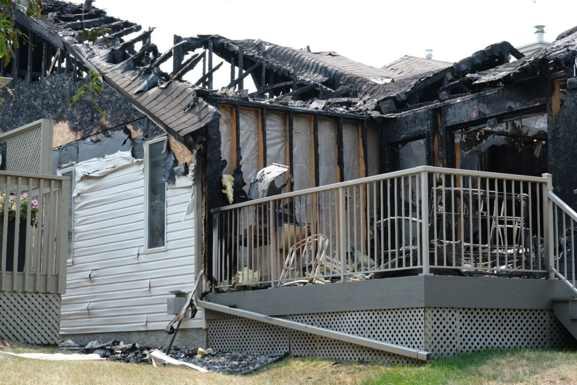

The schroeders' house two days after the burn
“November 21, 2025, at 8:56 pm, I could see an orange-red light coming through my room’s window. I heard a brief scream. I sprang up, went to the window, and saw my neighbour's house, completely a-blaze.” These are the words that Andrew Collins shared about the night of the fire. There were three reported casualties and one survivor, Matt Schroeder. The survivor reported seeing someone holding the door shut as if to try to kill him and his family.
An investigation has been going on for a couple of days at this point. We had a lot of questions and not many answers. With the only lead being a kid in Matt Schroeder's school who had moved into a reservation area in Canada.
After careful investigation, it came to light that the kid who fled was named Ezra, and he hated Matt. And after the fire, Ezra fled to his Grandparents’ house. Knowing all this, the police concluded that the perpetrator is Ezra’s grandmother. Upon arriving at her place, we also found out that she had a burn mark on her hand, likely from her holding the door shut.
Once we arrived at the house, Ezra left to talk with his friend Nora, until Matt showed up. He told them that he had known it was Nora and had come to kill her. Luckily, officials were able to intervene before the situation escalated too much. Matt Schroeder was arrested that day.
Before we arrested Nora and her mom(who was involved), they told us the real story. Apparently, Nora was around Matt's house when Matt grabbed her and took her inside. When Nora's mom tried to save her, the Schroeders fought back a little, and something ended up falling and exploding, lighting the house on fire. Nora's mom tried to open the door instead of holding it closed. The whole thing was an accident.
By Taylor Hyland
Published 2026-02-15